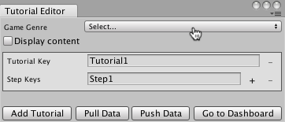
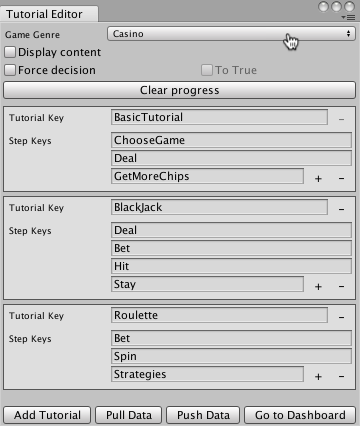
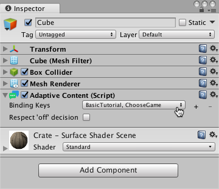

Implementing Adaptive Tutorials
To create an adaptive tutorial, start with one or more normal, non-adaptive tutorials. First, you use the Tutorial Editor window to outline the steps in your tutorials. Next, you add adaptive components to those GameObjects in a tutorial that the Tutorial Manager should turn on or off as a player advances through the tutorial.
Creating the Tutorial State Model
Use the Tutorial Editor window to create a state model that outlines the steps of each of your adaptive tutorials:
Open the Tutorial Editor window (menu: Window > Unity Analytics > Tutorial Editor).

Set the Game Genre. This setting is used by the Tutorial Manager machine learning algorithm. Choose the category that best describes the play style of your game.
The Tutorial Manager creates one tutorial entry automatically. If you have more than one tutorial, click the Add Tutorial button at the bottom of the window to create additional tutorials.
Assign a unique tutorial key name to identify each tutorial.
Add steps to the tutorial by clicking the + button next to the last existing step. (A single tutorial can contain up to 50 steps.)
Assign each step a key name. (The names must be unique within the same tutorial.)

A game with three tutorials, each with 3-4 steps
Click Push Data. Pushing uploads the structure of your tutorials to the Analytics service and creates or updates the remote text for any AdaptiveText components.
Note: Key names must start with a letter and may contain only letters or numbers.
Add Adaptive Components to Your Tutorials
Once you have defined your tutorial outline, you can add the adaptive components that the Tutorial Manager uses to turn the elements of your tutorial on and off as players advance through your tutorial. The Tutorial Manager SDK provides two adaptive components. The AdaptiveContent component turns GameObjects on when a tutorial step begins and turns them off again when the tutorial step finishes. The AdaptiveText component adds the ability to control the text displayed for a tutorial step from the Tutorial Manager dashboard. Put an AdaptiveText component on any tutorial GameObjects that contain a Text, TextMesh, or TextMeshPro object; use AdaptiveContent for other GameObjects.
Note: The Tutorial Manager turns off any GameObjects containing adaptive components when the scene loads (using GameObject.SetActive(false)) and turns them back on when the bound tutorial steps are played. Since Unity automatically disables child objects with their parents, avoid nesting adaptive components. (Nesting components can lead to the wrong behavior when you bind them to multiple tutorial steps.)
To add an adaptive component:
Select the GameObject in your scene Hierarchy.
In the Inspector window, click Add Component.
Click Analytics in the Add Component menu.
If the GameObject contains a Text, TextMesh, or TextMeshPro component, select the AdaptiveText component; otherwise, pick the AdaptiveContent component.
Bind the component to a tutorial and step using the Binding Keys list.
To bind a GameObject to more than one tutorial step, click the + button next to the list of steps.

A GameObject with an AdaptiveContent component